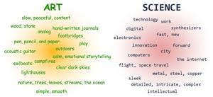
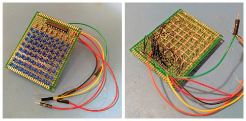
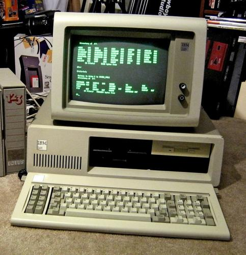
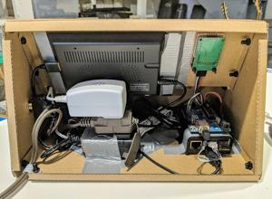
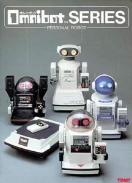

The boundaries between things – where lines are drawn – that’s where interesting things happen. Think coastlines, weather fronts, and the swirling eddies of freshly poured creamer in coffee... the transition from one aspect to another. These diverse and dynamic types of concepts are extremely fascinating to me.
The original idea for this project was a blending of opposing dichotomies: organic and artificial; nature and technology; art and science. These ideas aren’t necessarily mutually exclusive, but they do mostly inhabit different areas of my brain.
To illustrate, here’s what I came up with after playing a game of free association with these concepts:

This is one of my favorite projects because it combines so many things I love, both technical and artistic. I consider this much more of an art project than a technical one. I had experience with most of the technical aspects based off previous projects, so most of the time I spent working on the design and look of the device – which was the fun part.
The cardboard I used is as close to a (practical) natural building material I could think of – even more so than wood – mostly because it’s easier to tinker with and manipulate. And cardboard is only a step or so removed from compost; dampen the cardboard chassis and sprinkle some seeds on top and it might even grow! It’s soulless, indifferent technology enveloped in an almost organic membrane.
The electronic hardware inside consists of only a few low-cost, off the shelf parts: a Raspberry Pi, Arduino, mini LCD screen, mini keyboard, a temperature sensor, and an LED matrix module. I originally built an LED matrix by hand – bought the LEDs, the driver and PCB, soldered it, and wired everything up... Unfortunately, something went wrong and it wasn’t working correctly, so I begrudgingly bought a premade module for simplicity’s sake. I plan on reincorporating my custom matrix once the bugs are worked out.

This project’s inspiration eventually migrated towards another perennial passion of mine, Technological Brutalism. Maybe that term technically means something else, but for me it means brutalist websites and early internet and computer technology. It means rotary phones and floppy disks, age-tanned CRTs and green command-line interfaces... that’s the sort of technology I grew up with. It’s what I know and am comfortable with, and I’m unashamedly nostalgic for it.
I’m a child of the 80’s and have vivid memories of entire weekends spent hunkered down in dark basements transfixed by the glowing screens of bulky computers. Those glorious machines of my childhood are now dinosaurs – museum pieces – laughably antiquated by today’s standards. Yet there’s a simplicity and an almost raw, brutally honest aspect that’s somehow romantic and pure.

Maybe a better term would be something like Legacy Systems? The technology I’m referring to was cutting edge at one time and is only now viewed as archaic and “simple.” So, maybe it’s not technically fair, but I kind-of like the “technological brutalism” term. Brutalism refers to a specific bland style favoring functionality over aesthetics, and simplistic functionality is what I’m focusing on.
The legacy system concept is fascinating to me in its own right. They are systems that are old but cannot be removed or replaced because too much relies upon them, or because it’s too hard to change, or even because no one even really remembers how they work anymore. Many government systems are perfect examples of this; slow, cumbersome, and wildly inefficient, yet they remain out of necessity.
This romanticized “legacy system” concept is conveyed in this project through my implementation of the over-complicated hardware and software. For example, when the user initiates the command to simply display the temperature, the main BASH script calls a Python script to run in the background which opens a serial connection from the Raspberry Pi through USB to the Arduino. The Python script then sends a particular ASCII character to the waiting Arduino. The Arduino receives the character, then reads the data from the temperature sensor and returns it via I2C. This data is returned back to the Raspberry Pi and written to a simple text document by the Python script. Then, the main BASH script reads the text document, stores it in a variable, then finally displays it onscreen back to the user – HA!

Anyone who has even the slightest knowledge of Linux, microcontrollers, or Raspberry Pi’s will immediately recognize how convoluted this is! There are far simpler ways to achieve the same result. But I intentionally did it this way for two reasons: One, it’s like an electronic Rube Goldberg machine – it’s just silly fun! And two, because this is how I already know how to do it given my experience with other projects – perfect example of the “legacy systems” concept. Government projects are always built by the lowest bidder which usually results in frustratingly similar solutions.
The same goes for the Tic-Tac-Toe program I included. If the user asks the computer to play a game, another BASH script will be called and a Tic-Tac-Toe game will appear. I wrote the code from scratch, and it’s extremely inelegant due to my novice programming skills, but it was a fun challenge nonetheless. It’s another overly-complicated solution where the enjoyment comes from the creation process itself rather than a stock, efficient, standard, (read: boring) way. I could have just installed a premade game, but I wanted to build it myself... because it’s the journey, not the destination that matters.
While today’s technology constantly surprises and amazes me every single day and consistently makes my life easier and more enjoyable, it’s also extremely complicated. It can be overwhelming and incomprehensible. I’m getting older and my ability (and motivation) to keep up with the digital Joneses wanes with every new iPhone release and social media platform. Just the idea of old 8088 computers, locking in giant floppy disks (the actual floppy, floppy disks), and entering esoteric commands harkens back to a simpler time and gives a feeling of peace, security, and optimism. Honestly, I would take a Walkie-Talkie over a smart phone anymore.

Even the interface is supposed to reflect the endearingly naive vision of robots from the 1980’s. Sico, the ‘Rocky IV’ robot butler, Tomy Omnibot, and even Rosie the Robot maid from ‘The Jetsons’ TV show from back in the 60’s. They’re all so optimistically pleasant, and I wanted to convey that feel of innocent hopefulness. The user can ask the device to tell them a random fact, display the temperature, or play a game, but after every interaction a pixelated face appears on the LED matrix. A happy, sad, upset, or perplexed face will appear depending on the outcome of the game or how intriguing the fact was.
Running in the background of the physical interface is a webserver hosting a VERY simple interactive pixel art website. This aspect is half internet-brutalism fun and half homage to the old pixelated adventure games that fueled my childhood; ‘Commander Keen’ and ‘Space Quest’ and ‘Quest for Glory’ and ‘Scorched Earth’... and even Atari’s ‘Pitfall’ and ‘Kaboom,’ and so many more games from that era live in the happiest places of my brain. There’s no newfangled dynamic content, no immersive 3D elements, no custom mobile version... not even any CSS. Just ultra-simplistic HTML, and good old JPEGs and GIFs.
-> Click the image to explore! ->
(Quick aside, my recent infatuation with pixel art stems from the obvious nostalgia, but also from the commonly understated meticulous nature of the artform. True pixel art philosophy is based off patience and attention to detail. Of course, there are no “rules” to art, but pure pixel art focuses on manipulating each individual pixel, usually one at a time, versus a more efficient – but less ‘soulful’ – method using software-assisted production tools. The purpose is focused on the process versus the final product. Patience, observation, examination, attention, reflection… all conveys love, devotion, and ultimately determines meaning and value. To me, these are the most important things in Life. But I digress...)
Ultimately, this project is just a massive love letter on so many different levels, from pixel art to brutalist web design, from legacy systems to childhood nostalgia. And it’s an exploration of the dynamics between nature and technology. Since it involves so many diverse components, there’s plenty more to investigate and improve upon. I’m happy to admit this project is unfinished ...and thankfully never will be.